SPORTS MEDICINE & ARTHROSCOPY DIGEST
运动医学 · 关节镜文献速览
第 009 期 · 2026-09-16
近 72 小时（9月13–15日）10 本核心期刊新收录 45 篇（去重后本期精选 11 篇）
按关节分类：膝 4 · 肩 3 · 髋 0 · 运动防护 4 · 其他 0 ｜ 含 2 篇系统综述/Meta · 2 篇手术技术
编者按 EDITOR'S NOTE
本期覆盖 9 月 13–15 日（近 72 小时窗口）。9 月 15 日单日检出仅 6 篇，按兜底规则前推 2 日仍不足，故扩展至 72 小时，10 本核心期刊共检出 45 篇；剔除第 007、008 期已收录者后精选 11 篇。
本期最值得单读的是 Bankart 修复的「6 点钟锚钉」：把最下方锚钉放到 6 点位置，复发率从 26.3% 降到 10.1%，多因素回归 OR 2.89，是这篇回顾性研究里罕见的、方向明确的技术细节。另一条是 运动防护线的维生素 B6：654 例次精英运动员血样中 38.7% 的 PLP 高于 125 nmol/L，长期总摄入 >21 mg/d 且蛋白摄入偏低者存在毒性风险——这提醒我们「补剂越多越好」在微量元素上并不成立。
▍膝关节 · 4 篇
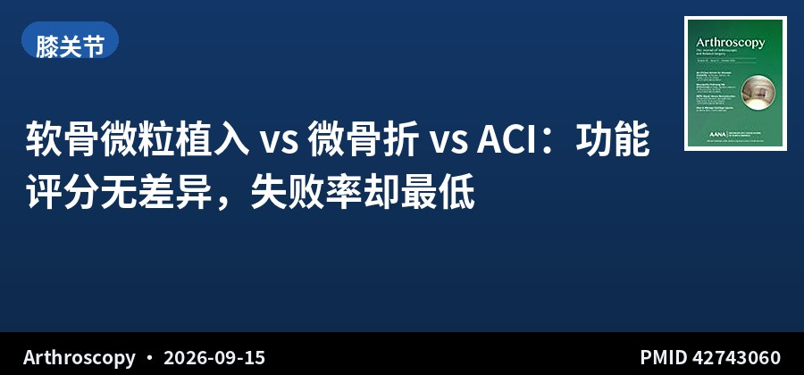
系统综述 · I–IV级证据 · 41项研究 · 2116例
软骨微粒植入 vs 微骨折 vs ACI：功能评分无差异，失败率却最低
Short- to Midterm Clinical Outcomes After Autologous Minced Cartilage Implantation for Focal Chondral Defects of the Knee Are Comparable to Microfracture and Autologous Chondrocyte Implantation: A Systematic Review
Arthroscopy · 2026-09-15 · 美国 Rush 大学医学中心 · PMID 42743060
一句话结论：41 项研究、2116 例（ACI/MACI 1590 例、MFX 302 例、AMCI 224 例）显示：IKDC、KOOS 各亚量表、Lysholm、Tegner、VAS 疼痛在各术式间随访期均无显著差异；定性分析提示 AMCI 的失败率最低（0%）。
要点：AMCI 平均随访仅 29.3 个月，明显短于 ACI/MACI 的 61.1 个月与 MFX 的 58.6 个月，且平均年龄最轻（32.7 岁 vs 34.4 / 45.0 岁）。因各研究异质性大，作者刻意未做定量合并，改用森林图定性判断 + 描述性统计，也未做亚组匹配。
对临床的启示：「失败率 0%」几乎不可能来自同等随访强度——AMCI 随访最短、患者最年轻，是典型的领先时间偏倚。这项综述最诚实的结论其实是：中等随访期内三者功能结果相当，AMCI 的一期修复优势尚未被长期数据证实。对年轻局灶软骨缺损患者，AMCI 可作为保留自体软骨的方案，但不宜向患者承诺优于 ACI。
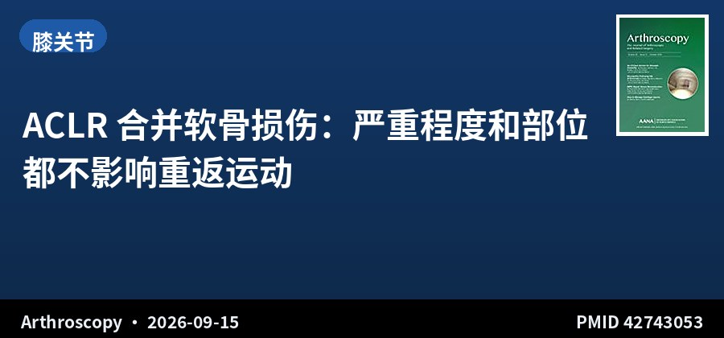
回顾性队列 · III级证据 · 441例 · 随访5年
ACLR 合并软骨损伤：严重程度和部位都不影响重返运动
Chondral Lesion Severity and Location Are Not Associated With Return-to-Play Outcomes After Anterior Cruciate Ligament Reconstruction
Arthroscopy · 2026-09-15 · 爱尔兰都柏林 Sports Surgery Clinic · PMID 42743053
一句话结论：441 例初次 ACLR 合并关节镜证实软骨损伤患者（13–45 岁，随访≥5 年），按 ICRS 分级与部位分层后，重返运动率、重返时机、运动水平、再伤率及 PROMs（Marx、KOOS、IKDC、WOMAC）均无显著差异。
要点：软骨病灶处理方式为留置于原位、关节成形或微骨折；多因素 Cox 回归与有序回归未发现软骨严重程度或部位是 RTP 及 PROMs 的独立预测因素。同时报告了同侧与对侧 ACL 再伤率。
对临床的启示：既往不少研究把合并软骨损伤当作 ACLR 预后不良因素，这项大样本长随访研究把「严重程度」和「部位」两个维度都拆开分析后均为阴性，说明决定 RTP 的更可能是患者心理、康复质量与运动类型而非软骨本身。临床上不应因合并软骨损伤而过度下调患者的运动预期。
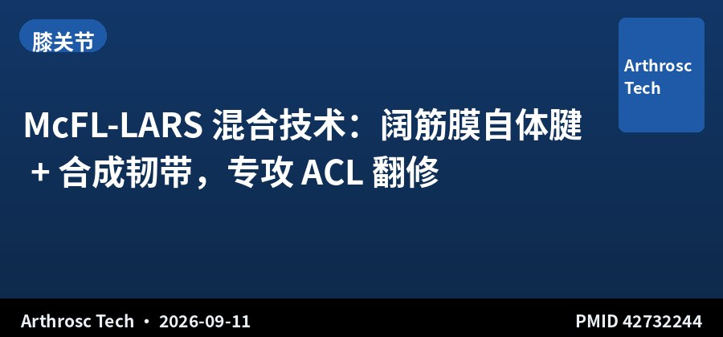
手术技术 · 技术报告 · 自体阔筋膜 + LARS
McFL-LARS 混合技术：阔筋膜自体腱 + 合成韧带，专攻 ACL 翻修
The "McFL-LARS" Hybrid Technique: Fascia Lata Autograft and Synthetic Reinforcement for Combined Revision Anterior Cruciate Ligament Reconstruction and Lateral Extra-articular Tenodesis
Arthrosc Tech · 2026-09-11 · 法国里尔 · PMID 42732244
一句话结论：将窄条阔筋膜自体腱与 6 mm LARS 合成韧带（Movmedix）复合，制成 8 mm 复合移植物，可同时用于 ACL 翻修重建与外侧关节外腱固定（LET），供区更易闭合。
要点：阔筋膜自体腱是成熟技术，其瓶颈在于直径不足或需额外切取腘绳肌腱；复合后既保证强度又保留生物学活性。技术要点是 LARS 作为内芯增强、阔筋膜包裹于外，形成一体化移植物。
对临床的启示：对自体移植物来源有限的 ACL 翻修合并高度松弛患者，这个方案跳出了「要么取对侧腘绳肌、要么上异体腱」的二选一。需要注意的是 LARS 属合成材料，长期生物学整合与感染风险仍是随访重点，作者也未提供临床结果数据——属技术描述阶段。
📷 原文图片（共 4 张 · 左右滑动查看）
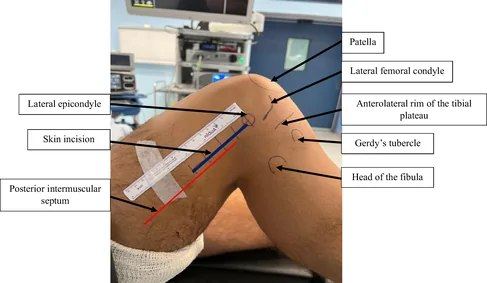
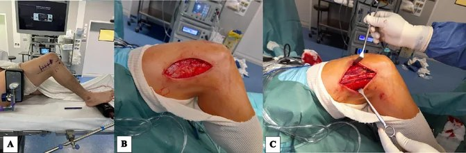
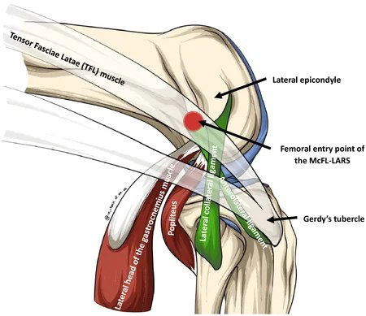
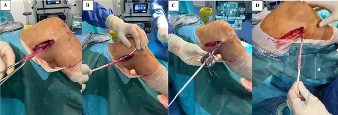
图片来源：原文开放全文（PubMed Central），版权归原出版方
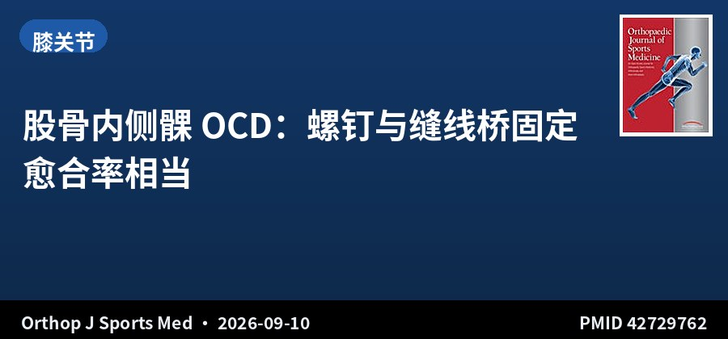
队列研究 · III级证据 · 69例 · ROCK 注册研究
股骨内侧髁 OCD：螺钉与缝线桥固定愈合率相当
Screw Versus Suture Bridge Fixation for Medial Femoral Condyle Osteochondritis Dissecans Demonstrate Comparable Healing Rates
Orthop J Sports Med · 2026-09-10 · 美国多中心 ROCK 注册 · PMID 42729762
一句话结论：69 例不稳定型股骨内侧髁 OCD 病灶（平均 14.3 岁，最少随访 6 个月），螺钉组与缝线桥组的最终愈合状态、二次软骨修复转化率（17.2% vs 20%，P≥.999）无显著差异，缝线桥组内置物相关并发症更少。
要点：数据来自多中心 ROCK 前瞻注册研究，采用 MRI 愈合标准判定骨性愈合。研究假设为两组愈合率、转化率与 PROMs 无差异、缝线桥内置物并发症更少。
对临床的启示：青少年 MFC OCD 的固定方式长期存在争议，这项注册研究支持缝线桥作为可行的替代方案——在愈合率不劣的前提下规避了螺钉的内置物相关问题与二次取出。但样本仅 69 例、最短随访 6 个月，尚未能回答远期骨性关节炎进展问题，尤其对骨龄未闭的青少年需谨慎解读。
原文：doi.org/10.1177/23259671261474714
📷 原文图片（共 4 张 · 左右滑动查看）
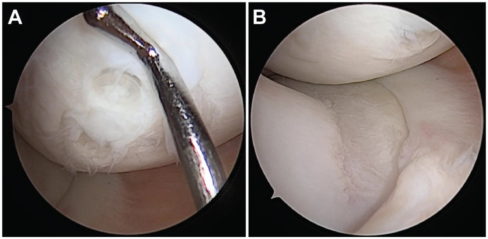
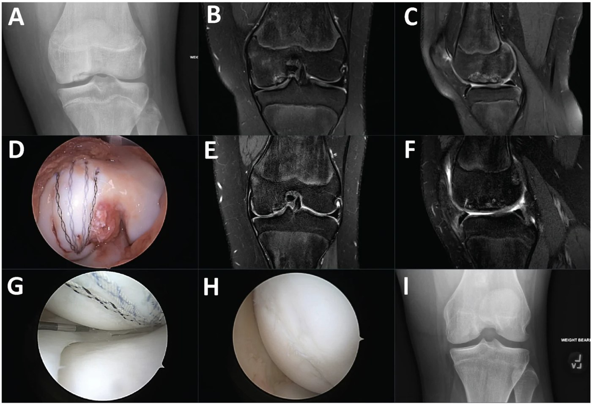
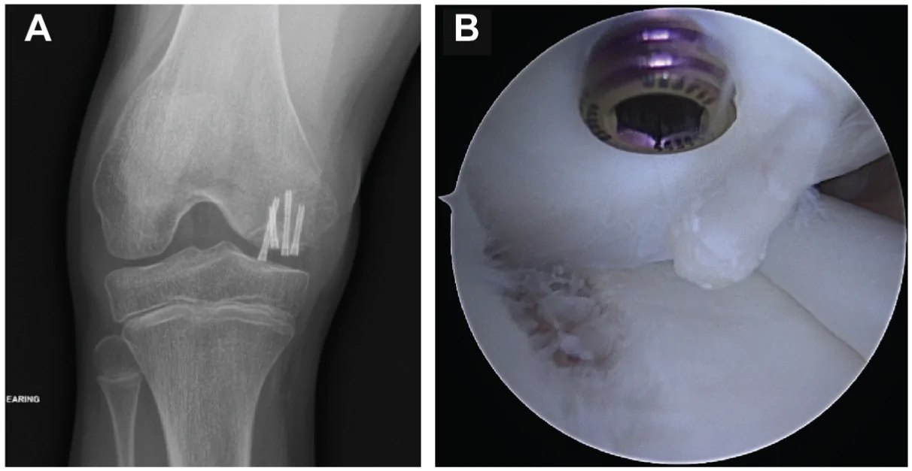
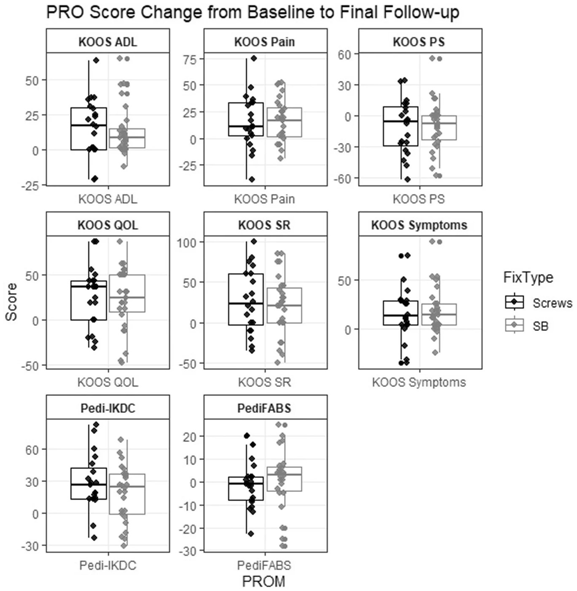
图片来源：原文开放全文（PubMed Central），版权归原出版方
▍肩关节 · 3 篇
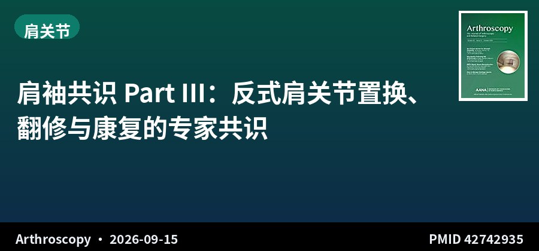
国际共识 · 专家声明 · 肩袖共识 Part III
肩袖共识 Part III：反式肩关节置换、翻修与康复的专家共识
Rotator Cuff Consensus Part III: Reverse Total Shoulder Arthroplasty, Revisions, Rehabilitation, and Follow-Up—An International Consensus Expert Statement
Arthroscopy · 2026-09-15 · 国际肩袖撕裂共识组 · PMID 42742935
一句话结论：针对反式全肩关节置换（RTSA）、翻修手术、康复与重返运动、随访四大议题更新国际共识，反映新证据与术式演变，并明确当前仍存争议的领域。
要点：由多国专家组采用共识流程形成，作者列表与协作者名单涵盖北美、欧洲、亚洲、大洋洲主要肩关节中心，共识内容包括 RTSA 适应证边界、翻修策略、康复节奏与随访节点。
对临床的启示：Part III 是整个肩袖共识中最贴临床决策的一环：RTSA 什么时候上、翻修怎么选、术后康复推进到哪一步可以放行，都给了相对明确的态度。建议与 Part I、II 连读，单看这一部分容易脱离前述对撕裂类型与修复原则的界定。
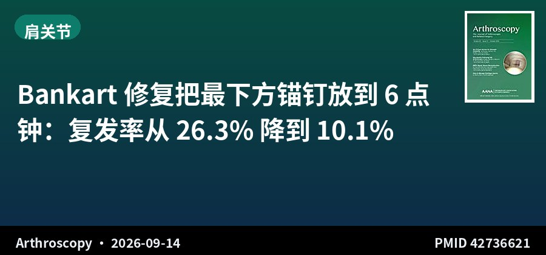
回顾性队列 · III级证据 · 136例 · 随访2年+
Bankart 修复把最下方锚钉放到 6 点钟：复发率从 26.3% 降到 10.1%
Arthroscopic Bankart Repair With a 6 o'Clock Anchor Reduces Recurrence and Improves Clinical Outcomes in Recurrent Anterior Instability
Arthroscopy · 2026-09-14 · 韩国全北大学医院 · PMID 42736621
一句话结论：136 例复发性前向不稳行关节镜 Bankart 修复（6 点钟组 79 例 vs 非 6 点钟组 57 例），复发率 10.1% vs 26.3%（P=.024）；多因素分析显示 6 点钟锚钉是降低复发的独立因素（OR 2.89，95%CI 1.13–7.37，P=.027），KSSI 等评分也更优。
要点：纳入 2012–2022 年、无显著骨缺损、随访≥2 年的前下盂唇撕裂患者，复发定义为恐惧试验阳性、半脱位或再脱位。各临床评分的最小临床重要差异按队列分布法（0.5 SD）计算。
对临床的启示：这是一个「操作细节换结果」的典型案例——不动整体术式，只把最下方锚钉前移到 6 点位置，就显著压低了复发率。机制上 6 点钟位置的锚钉更接近前下盂肱韧带的解剖足印，能在最大外展外旋位提供支撑。对反复复发、但骨缺损尚未达到骨块移植指征的患者，这个细节值得直接落到手术习惯里。
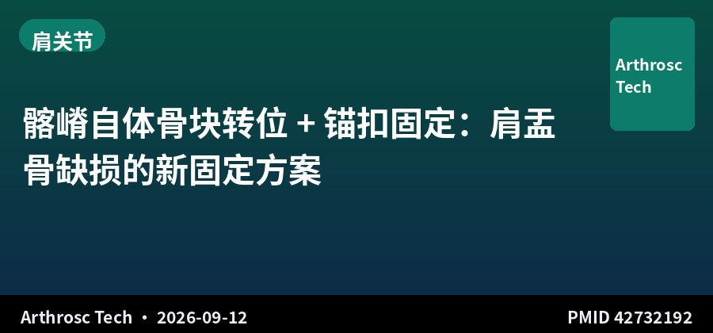
手术技术 · 髂嵴自体骨块 · 锚扣固定
髂嵴自体骨块转位 + 锚扣固定：肩盂骨缺损的新固定方案
Arthroscopic Free Bone Block Transfer Technique Using Iliac Crest Autograft With Anchor-Button Fixation for Glenohumeral Instability and Glenoid Bone Loss
Arthrosc Tech · 2026-09-12 · 土耳其 Gazi 大学 · PMID 42732192
一句话结论：介绍一种关节镜辅助下的游离髂嵴自体骨块转位技术，采用特制锚扣单元固定，用于处理合并肩盂骨缺损的 Bankart 损伤所致盂肱不稳。
要点：核心优势在于锚扣锁定机制提供比传统螺钉 + 缝线锚钉更坚强的固定与更优的旋转稳定性，从而在术后早期关键阶段减少半脱位与复发。适用于严重骨缺损或多发复发患者。
对临床的启示：骨块移植的软肋一直在早期固定强度——螺钉对骨块有劈裂风险、缝线锚钉抗旋转不足。锚扣结构把应力分散到骨块两面，理论上允许更早活动。这类技术笔记的价值在于提供思路，但缺乏生物力学测试与临床随访，落地前需评估本单位器械可获得性。
📷 原文图片（共 4 张 · 左右滑动查看）
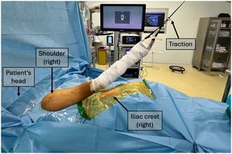
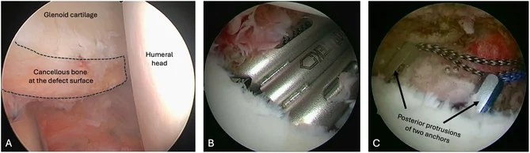
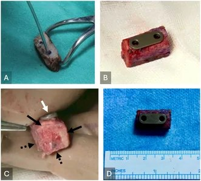
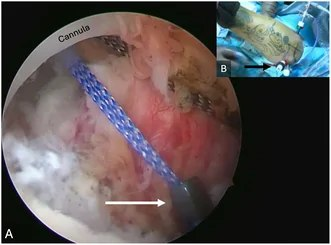
图片来源：原文开放全文（PubMed Central），版权归原出版方
▍运动防护 · 4 篇
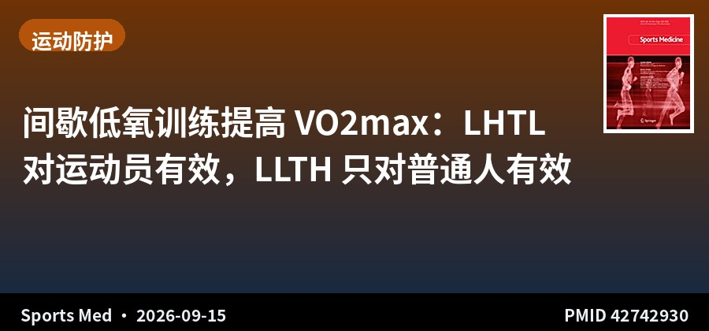
系统综述+Meta回归 · I级证据 · 62项研究 · 1332人
间歇低氧训练提高 VO2max：LHTL 对运动员有效，LLTH 只对普通人有效
The Effects of Intermittent Hypoxic Training Strategies on Maximal Oxygen Uptake in Healthy Humans: A Meta-analysis with Meta-regression
Sports Med · 2026-09-15 · 法国格勒诺布尔大学 · PMID 42742930
一句话结论：纳入 62 项对照研究、1332 人（运动员 610、非运动员 722）：LHTL（高住低练）显著提升运动员 VO2max（MD 2.17，95%CI 0.77–3.56），但对非运动员不显著；LLTH（低住高练）在非运动员中显著（MD 1.70，95%CI 0.85–2.54）而对运动员不显著；PHC（被动低氧预处理）在运动员中无显著获益。
要点：检索 PubMed、EMBASE、Web of Science，采用随机效应模型与 meta 回归，运动员与非运动员分层分析，RoB2 评估偏倚、漏斗图与 Egger 检验评估发表偏倚。
对临床的启示：这项 meta 把「低氧训练」从笼统概念拆成了三种可操作模式，并给出人群分层答案：运动员用高住低练，普通健身人群用低住高练，单纯被动低氧预处理则证据不足。对以 VO2max 为目标的备赛周期安排，这是目前最清晰的一张选择表。注意运动员组 LHTL 的效应量为中等偏小，属锦上添花而非颠覆性手段。
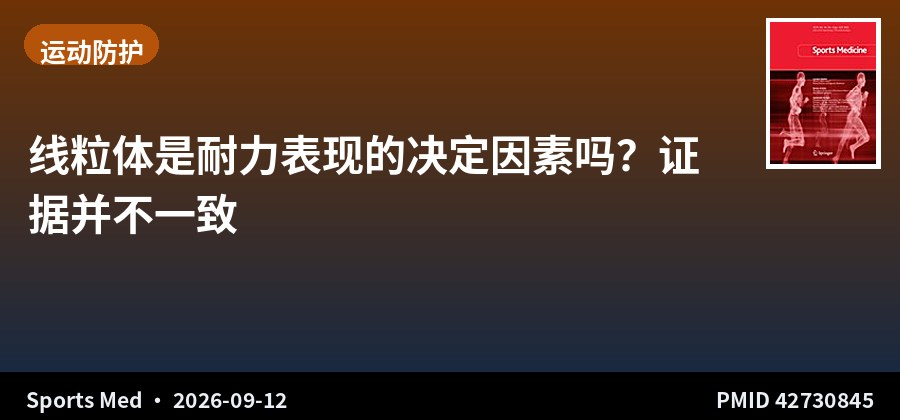
叙述性综述 · 线粒体与耐力表现
线粒体是耐力表现的决定因素吗？证据并不一致
Citius, Maius, Melius: Mitochondria and Endurance Performance
Sports Med · 2026-09-12 · 澳大利亚 / 挪威团队 · PMID 42730845
一句话结论：横断面研究支持耐力优异者线粒体含量与呼吸功能更高，相关性研究也显示正关联；但训练引起的线粒体改变与耐力表现变化之间常缺乏相关性，而单纯提高供氧（如提高氧浓度）即可改善表现，提示表现瓶颈未必在线粒体。
要点：综述系统梳理了人类横断面、相关性与干预三类研究，涵盖训练、放血（phlebotomy）与去训练三种干预模型对线粒体特征与耐力表现标记的影响。
对临床的启示：「线粒体越多越好」是运动科学的常见简化叙事，这篇综述直接指出训练诱导的线粒体适应与成绩提升可以脱钩。对实践的意义在于：不必把线粒体生物合成标志物当作训练效果的唯一金标准，中心性适应（供氧）同样可能才是限制环节——尤其在高水平耐力运动员中。
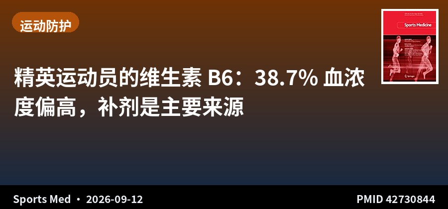
观察性研究 · 654 例次 · 精英运动员
精英运动员的维生素 B6：38.7% 血浓度偏高，补剂是主要来源
Vitamin B6 in Elite Athletes: Potential Implications of High Intakes
Sports Med · 2026-09-12 · 英国 St Mary's 大学 / Orreco · PMID 42730844
一句话结论：396 名精英运动员共 654 例次常规生物标志物监测中，5.2% 的 PLP 低于 30 nmol/L（缺乏）、38.7% 高于 125 nmol/L（偏高）；长期总维生素 B6 摄入超过 21 mg/d，尤其合并低蛋白摄入时，可能增加毒性风险。
要点：运动员常使用营养补充剂、运动饮料甚至静脉营养，这些途径提供高生物利用度的维生素 B6，是血 PLP 偏高的可能原因。作者同时讨论了对运动能力「更高需求」这一说法与实际摄入之间的落差。
对临床的启示：维生素 B6 是少数「过量有明确神经毒性」的水溶性维生素，长期高剂量可致感觉性周围神经病。当运动员同时服用复合补剂、运动饮料与静脉营养时，B6 极易被叠加到超生理水平。建议对精英运动员的补剂清单做定期审计，而非只监测单项缺乏；低蛋白饮食者尤需警惕。
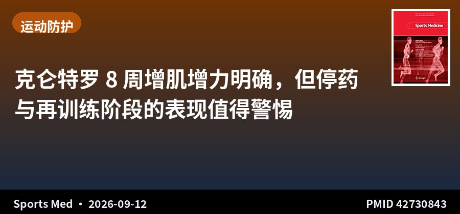
随机对照试验 · II级证据 · 32人 · 双盲安慰剂对照
克仑特罗 8 周增肌增力明确，但停药与再训练阶段的表现值得警惕
Effects of Clenbuterol on Body Composition and Strength Following Resistance Training, Detraining, and Retraining in Healthy Adults: A Randomized Controlled Trial
Sports Med · 2026-09-12 · 丹麦哥本哈根大学 · PMID 42730843
一句话结论：32 名健康年轻人（男女各 16）双盲随机接受克仑特罗 80 μg/d 或安慰剂，8 周抗阻训练后，克仑特罗组瘦体重增加 +1.7 kg（p<0.001）、卧推 1RM +6 kg、腿举 1RM +16 kg（p=0.001），且男性效应强于女性。
要点：试验设计含 8 周训练 + 16 周去训练 + 8 周再训练三个阶段，采用 DXA 评估体成分、1RM 评估力量。克仑特罗为强效 β2 受体激动剂，常被超说明书用于增肌减脂。
对临床的启示：这是少见的、在健康人群中以 RCT 方式量化克仑特罗增肌效应的研究——效应量确实可观，尤其男性。但它同时是 WADA 明令禁用的兴奋剂，且长期心血管风险（心动过速、心肌毒性）明确，本研究也未评估安全性终点。价值在于为反兴奋剂教育提供了可引用的量化证据：增肌是真的，代价也是真的。
关于本栏目：每日定时检索 AJSM、Arthroscopy、Arthroscopy Techniques、KSSTA、Sports Health、OJSM、J ISAKOS、Sports Medicine、Foot & Ankle International、JSES 共 10 本运动医学核心期刊前一日新收录文献，按关节分类，AI 辅助生成中文精要。
声明：本内容由 AI 辅助整理，仅供学术交流参考，观点与数据请以原文为准，不构成诊疗建议。文献题录与摘要来源：PubMed。
— 运动医学 · 关节镜文献速览 · 第 009 期 —